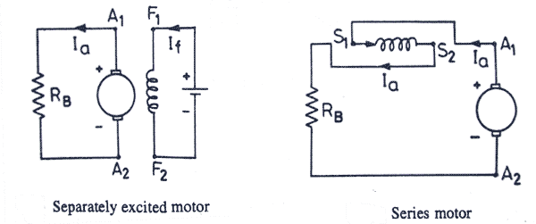
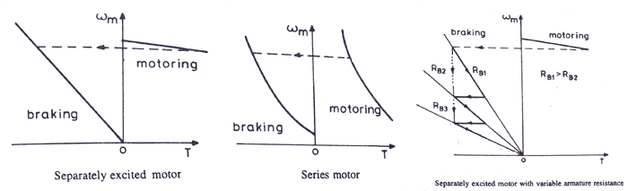
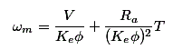
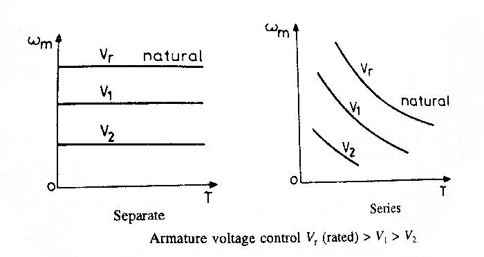
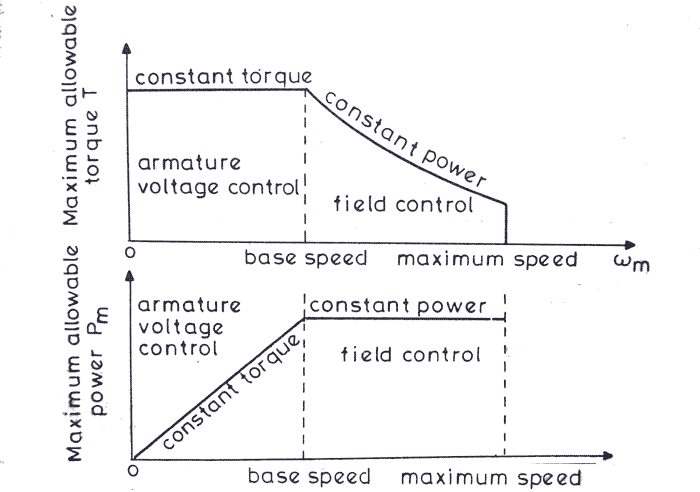

Everywhere DC motors are used in large applications, the use of drives are very necessary for the smooth running and operating of these motors. The DC motor drives are used mainly for good speed regulation, frequent starting, braking and reversing. Before enlisting the practical applications of the drives used for DC motors, we will discuss about the different operation of electric drives for different purposes:
We know that, normally the rotor of a DC motor is energized by the commutation process through brushes. So the maximum allowable starting electric current is determined by the electric current which can be safely carried out by the brushes without sparking. In general, the motors are such designed that they can carry almost twice of the rated electric current during starting condition. But for some specially designed motors, this can be almost 3-5 times of the rated current. But why so much electric current flows through the circuit of DC motors during the starting condition ?
This is because when the motor is at stand still condition, there is only a small armature resistance present in the circuit so no back emf is generated. That is why when the motor is started with full supply voltage across its terminal, there is a huge electric current flow through the motor, which may damage the motor because of heavy sparking across the commutators and a huge amount of heat is generated. That is the reason why some precautionary measures are taken during the starting of the DC motors.
The speed of a DC motor drive is usually controlled by variable resistance method, which can be also used to limit the starting electric current as shown in the figure below. When the motor gains speed and the back emf increases, the resistances are cut out one by one from the circuit and therefore the electric current is kept within permissible limit.
Starting of DC Motor
Braking of DC Motors
Braking is a very important operation for DC motor drives. The need of decreasing the speed of a motor or stopping it totally may arise at any moment, that’s when braking is applied. braking of DC motors is basically developing a negative torque while the motor works as generator and as a result the motion of the motor is opposed. There are mainly three types of braking of DC motors :
i. Regenerative braking
ii. Dynamic or rheostat braking
iii. Plugging or reverse voltage braking.
Regenerative braking takes place when the generated energy is supplied to the source, or we can show this via this equation :
E > V and negative Ia.
Regenerative braking characteristics of a separately excited motor
As the field flux cannot be increased beyond a rated value, so regenerative braking is possible only when the speed of motor is higher than the rated value. The speed torque characteristics is shown in the graph above. When regenerative braking occurs, the terminal voltage rises and as a result the source is relieved from supplying this amount of power. This is the reason why loads are connected across the circuit. So, it is clear that regenerative braking should be used only when there are enough loads to absorb the regenerative power.
Dynamic braking is another type of braking of DC motor drives where the rotation of the armature itself causes the braking. This method is also a widely used DC motor drive system. When braking is desired, then the armature of the motor is disconnected from the source and a series resistance is introduced across the armature. Then the motor acts as a generator and electric current flows in the opposite direction which indicates that the field connection is reversed. The diagram for separately excited and series DC motor both are shown in figure below.

When braking is required to occur quickly the resistance (RB) is considered to be of some sections. As the braking occurs and the speed of the motor falls, the resistance are cut out one by one section to maintain the light average torque.

Plugging is a type of braking where the supply voltage is reserved when the need of braking arises. A resistance is also introduced in the circuit while braking takes place. When the direction of the supply voltage is reserved, then the armature electric current also reserves forcing the back enf to a very high value and hence braking the motor. For series motor only armature is reversed for plugging. The diagram of separately excited and series excited motors are shown in the figure.
Speed Control of DC Motor Drives
The main application of electric drives can be said as the need of braking of DC motors . We know the equation to describe the speed of a rotating dc motor drives is as

Now, according to this equation, the speed of a motor can be controlled by the following methods
i. Armature voltage control
ii. Field flux control
iii. Armature resistance control
Among all of these, armature voltage control is preferred because of high efficiency and good speed regulation and good transient response. But the only disadvantage of this method is that it can only operate under the rated speed, because the armature voltage cannot be allowed to exceed rated value. The speed torque curve for armature voltage control is shown below.
voltage control" class="aligncenter size-full wp-image-3508" />
When speed control is required above the rated speed, field flux control is used. Normally in ordinary machines, the maximum speed can be allowed up to twice of the rated speed and for specially designed machines this can be allowed up to six times of the rated speed. The torque speed characteristics for field flux control are shown in the figure below.
Field Flux Control of DC Motor
How the armature voltage control and field flux control is made to operate below and above the rated speed is shown in the figure below.
voltage and field control" class="aligncenter size-full wp-image-3512" />
Now, finally coming to resistance control method. Here speed is varied by wasting power in an external resistor that is connected in series with the armature. This method is not used very much because it is an inefficient method of controlling speed and it is only used in the places where the speed control time forms only a fraction of the total running time, such as traction. The speed torque curve of dc motor drives is given below.
resistance
control, Re: external resistance." width="700" height="336" class="size-full wp-image-3514" /> Speed torque curves of dc motors with resistance control, Re: external resistance.So, the application and types of dc motor drives have been discussed very easily.
 by
by {kind=link}
{kind=link}
{kind=link}
{kind=link}
{kind=link}
{kind=link}
{kind=link}